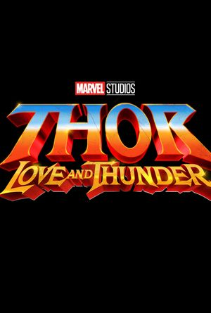

THOR THE LOVE AND THUNDER |
|  |
Thor: The Love And Thunder is a 2017 American superhero film based on the Marvel Comics character Thor, produced by Marvel Studios and distributed by Walt Disney Studios Motion Pictures. It is the sequel to Thor (2011) and Thor: The Dark World (2013), and the 17th film in the Marvel Cinematic Universe (MCU). The film is directed by Taika Waititi from a screenplay by Eric Pearson and the writing team of Craig Kyle and Christopher Yost, and stars Chris Hemsworth as Thor alongside Tom Hiddleston, Cate Blanchett, Idris Elba, Jeff Goldblum, Tessa Thompson, Karl Urban, Mark Ruffalo, and Anthony Hopkins. In Thor: Ragnarok, Thor must escape the alien planet Sakaar in time to save Asgard from Hela and the impending Ragnarök. A third Thor film was confirmed in January 2014, with Kyle and Yost beginning work on the screenplay. The involvement of Hemsworth and Hiddleston was announced that October. Waititi joined the film as director a year later, after Thor: The Dark World director Alan Taylor chose not to return. Ruffalo joined the cast reprising the role of Hulk from previous MCU films, which allowed elements of the 2006 comic storyline "Planet Hulk" to be adapted for Ragnarok. The rest of the cast, including Blanchett as Hela, was confirmed in May 2016, with Pearson's involvement revealed at the start of filming that July. Principal photography took place in Brisbane and Sydney, Australia, with the film also having exclusive use of Village Roadshow Studios in Oxenford, concluding in October 2016. |